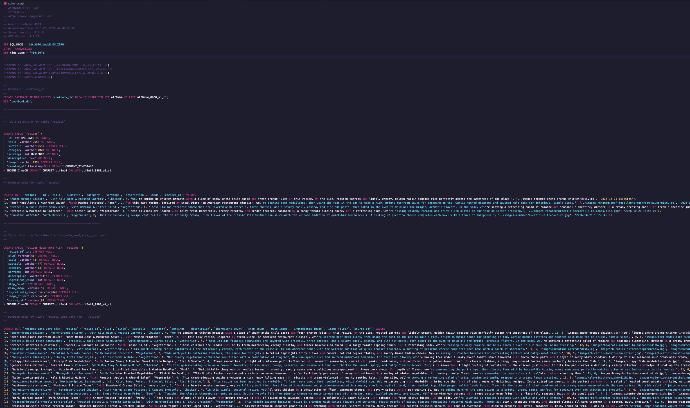
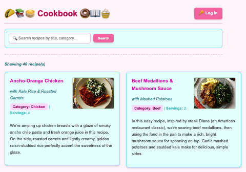
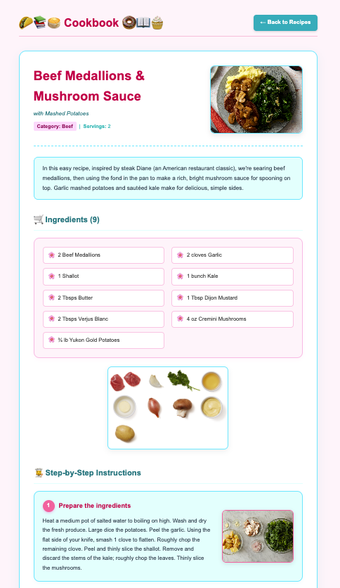
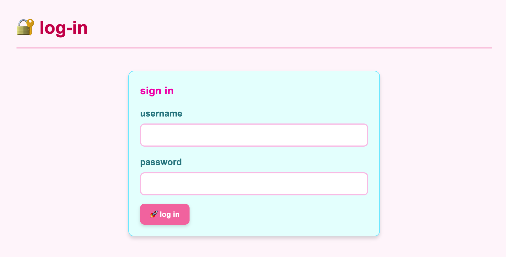
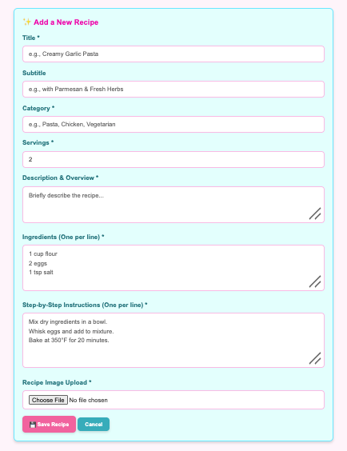

After looking throuhg a myriad of online cookbooks in search of inspiration for how to design this one, I found that I didn't actually like how they looked. They were usually pretty bland with simple colors, or no colors at all. They also didn't look super clear in terms of instructions, or there would be a picture of an ad/irrelevant things in between each step. Another thing was having to scroll too much to find the actual recipe and the ingredients, so I simplified eveyrthing so the user wouldn't have to waste time on getting to the recipe when they could have spent it getting started on it, and I did it with PHP and MySQL systems.
The final site has instant search, clean recipe steps, and built-in security to block bad files while protecting user data. It also allows for admins or authorized users to add, delete, or add recipes with a very simple form.
The Problem: Create a safe and secure recipe site that allows the user to get to what they need to rather quickly, rather than having to sift through irrelevant content or poorly designed interfaces.
My Goals:
I started by creating a database structure to store all the recipe details and login info. Then, with the help of AI, I used a matching color theme with pinks and blues so it stands out a little from other cookbooks while making it my own.

The database.
A major server-side decision was how to handle recipe image uploads securely. Instead of trusting client filenames or browser-supplied MIME types, the code uses PHP's finfo extension in alpha.php and edit.php to inspect the real binary file type. This ensures only valid images (JPEG, PNG, WebP) are stored and prevents malicious script execution.
The quoted code.
The finished website has three main parts:
1. The Homepage: Shows all recipes in a grid with a search bar that filters dishes by category or keyword.

Homepage when logged out (see hero for reference of the admin page).
2. The Recipe Page: Each recipe page shows ingredients and numbered steps for cooking.

Recipe page for instructions.
3. The Admin Tools: Allows admins and authorized users to add, edit, or delete recipes and upload pictures.

Login page for accessing admin controls.

Add new recipe form for logged in users.
I think I was able to meet each goal.
If I build another version in the future, I would store all the ingredient lists directly in the database instead of CSV files to make updating data even smoother. I would also spend more time on the design and layout to make it even more visually appealing and user-friendly while still making it unique and my own